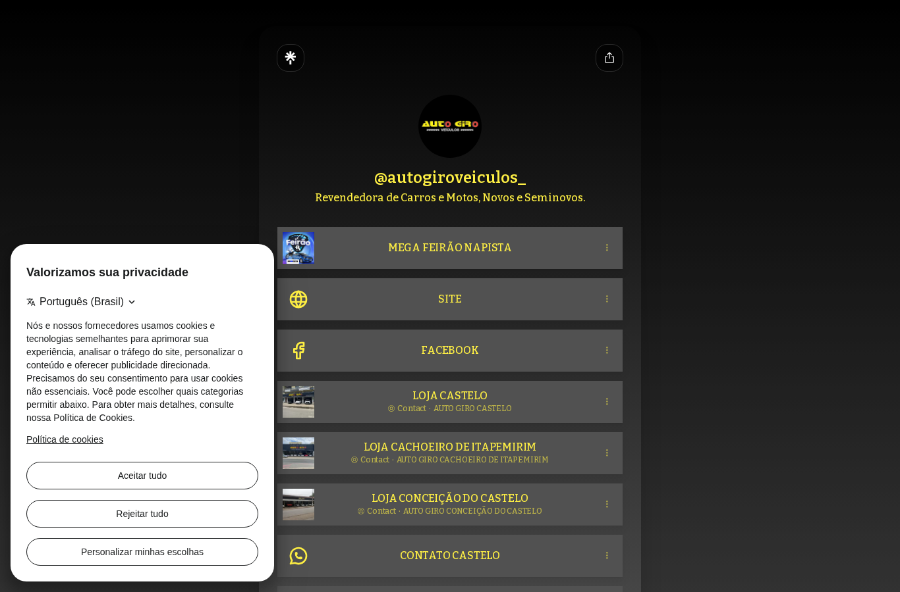
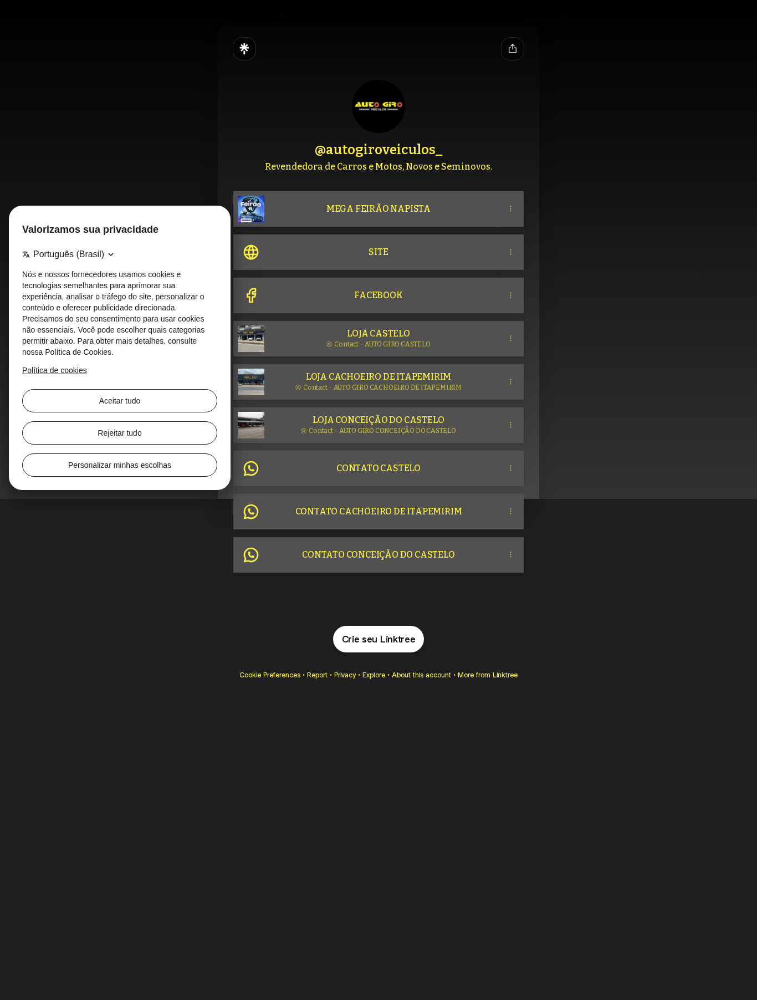

Sistema de Investigação de Marca e Identidade Online
https://linktr.ee/autogiroveiculos_
Prioridade: MEDIUM · Cenário: B_AMBIGUOUS_COMMUNICATION · Revisão humana: PENDING
O estabelecimento comercial investigado é uma revendedora de veículos multimarcas com presença regional (Auto Giro Veículos). A empresa utiliza a chancela 'MEGA FEIRÃO NAPISTA' no primeiro link de seu perfil com redirecionamento legítimo para o estoque da loja no portal NaPista (do conglomerado Banco BV). Todavia, não há declaração expressa de correspondente bancário nem exibição de CNPJ no perfil, caracterizando relação comercial com governança regulatória incompleta nos termos da Resolução CMN nº 4.935/2021, justificando a classificação como REVIEW_REQUIRED sob prioridade MEDIUM. [Revisor: CONFIRM] A página inspecionada pertence a uma revendedora de veículos automotores (Auto Giro Veículos) que promove em destaque o 'MEGA FEIRÃO NAPISTA' com ícone promocional associado à marca BV e redirecionamento para o seu estoque oficial no NaPista (E-OFFICIAL-LINKS, E-SHOT-VIEWPORT). Embora o vínculo com a plataforma do conglomerado BV seja legítimo, a comunicação no agregador de links não apresenta os esclarecimentos regulatórios formais obrigatórios para correspondentes bancários e parceiros comerciais (Resolução CMN 4.935/2021), como CNPJ, razão social e indicação clara da relação de parceria. Portanto, confirma-se a classificação REVIEW_REQUIRED com prioridade MEDIUM.


| Ref | Tipo | Local | Conteúdo |
|---|---|---|---|
| E-URL | domain | url | URL final: https://linktr.ee/autogiroveiculos_ (domínio: linktr.ee) |
| E-DISC-001 | text | search_index | Índice de busca (grounding): linktr.ee — **URL:** `https://linktr.ee/autogiro` (Hub integrador dos perfis no Instagram e Facebook) | **Como a marca é utilizada:** Promove ostensivamente a chamada comercial **"MEGA FEIRÃO NAPISTA"** em destaque visual no topo de sua árvore de links de redes sociais | **Uso Indevido da Marca em "Feirões":** Identificou-se que lojistas e intermediadores utilizam livremente o termo *"Feirão NaPista"* em perfis de redes sociais e canais de Linktree para sugerir que a loja física ou o evento local possui patrocínio ou chancela institucional direta do Banco BV |
| E-SHOT-VIEWPORT | screenshot | viewport | evidence/C1f599070c1/attempt-1/viewport.png (sha256 e02abfa32bb82a8a…) |
| E-SHOT-FULL | screenshot | page | evidence/C1f599070c1/attempt-1/fullpage.png (sha256 908f95f21bc8ce27…) |
| E-TITLE | title | head | autogiroveiculos_ Official: Facebook | Linktree |
| E-META-1 | meta | head | description: Revendedora de Carros e Motos, Novos e Seminovos. |
| E-META-2 | meta | head | og:site_name: Linktree |
| E-META-3 | meta | head | og:title: autogiroveiculos_ Official: Facebook | Linktree |
| E-META-4 | meta | head | og:description: Revendedora de Carros e Motos, Novos e Seminovos. |
| E-CANONICAL | meta | head | https://linktr.ee/autogiroveiculos_ |
| E-HEAD-1 | heading | page | @autogiroveiculos_ |
| E-HEAD-2 | heading | page | Revendedora de Carros e Motos, Novos e Seminovos. |
| E-HEAD-3 | heading | page | Explore other Linktrees |
| E-HEAD-4 | heading | page | About this account |
| E-HEAD-5 | heading | page | More from Linktree |
| E-FOLD | text | viewport (acima da dobra) | @autogiroveiculos_ Revendedora de Carros e Motos, Novos e Seminovos. MEGA FEIRÃO NAPISTA SITE FACEBOOK LOJA CASTELO Contact · AUTO GIRO CASTELO LOJA CACHOEIRO DE ITAPEMIRIM Contact · AUTO GIRO CACHOEIRO DE ITAPEMIRIM LOJA CONCEIÇÃO DO CASTELO Contact · AUTO GIRO CONCEIÇÃO DO CASTELO CONTATO CASTELO Explore other Linktrees paulsn @paulsn Alyson Stoner @alysonstoner Verstappen Com @verstappencom davestewart @davestewart Simpson Street @simpsonstreet Fibs and Friends @fibsandfriends fiajames @fiajames shaep.co @shaep.co Guy Raz @guy.raz Demi Lovato @demilovato Robby Hoffman @robbyhoffman previous next Discover more See all @infra.ternate @oddlyodi @coachingmind @Angelsvlog @FatirAditia @Apas1onad @esteler67 @PoolGuyLabs @ericatfelton @99_samples @cau_vieira7 @goldenstatefabrication @dewi.hamzad @m1nhen @noviosorozco @kyaw.nyein8 @cfaclare @keblengerdenpasar @forshape.shopping33 @dlagran13 @ascarion @spiralsandstars @priscilamouramakeup @InfoLengkapBimbelM3KidsDumek @eskimo.entreijuis.rs @ThisOneLife @Ellagonza @optibit @SaoirseDonPhalastin @Wreathsbysophied @praywithangela @just4samara @LorianeAthalia @joseandrestrainer @cruiselinecommunity About this account autogiroveiculos_ To help keep our community authentic, we're showing information about accounts on Linktree. Joined July 2023 autogiroveiculos_ has been a member of Linktree for 3 years and joined in July 2023. Resources autogiroveiculos_ has populated their site with include: • MEGA FEIRÃO NAPISTA • SITE • FACEBOOK • CONTATO CASTELO • CONTATO CACHOEIRO DE ITAPEMIRIM • CONTATO CONCEIÇÃO DO CASTELO More from Linktree Products Link in bio + tools Manage your social media Grow and engage your audience Monetize your following Measure your success Templates Marketplace Learn Resources How to use Linktree Pricing Blog How to Earn With Linktree How to recover deleted Instagram messages in 3 ways How much does TikTok pay per view in 2026? How to see who unfollowed me on Instagram Classy quotes for the strong & confident |
| E-CTA-1 | cta | page | Linktree |
| E-CTA-2 | cta | page | Share profile |
| E-CTA-3 | cta | page | Share |
| E-CTA-4 | cta | page | Share |
| E-CTA-5 | cta | page | Share |
| E-CTA-6 | cta | page | LOJA CASTELO Contact · AUTO GIRO CASTELO |
| E-CTA-7 | cta | page | Share |
| E-CTA-8 | cta | page | LOJA CACHOEIRO DE ITAPEMIRIM Contact · AUTO GIRO CACHOEIRO DE ITAPEMIRIM |
| E-CTA-9 | cta | page | Share |
| E-CTA-10 | cta | page | LOJA CONCEIÇÃO DO CASTELO Contact · AUTO GIRO CONCEIÇÃO DO CASTELO |
| E-CTA-11 | cta | page | Share |
| E-CTA-12 | cta | page | Share |
| E-CTA-13 | cta | page | Share |
| E-CTA-14 | cta | page | Share |
| E-CTA-15 | cta | page | Cookie Preferences |
| E-CTA-16 | cta | page | Explore |
| E-CTA-17 | cta | page | About this account |
| E-CTA-18 | cta | page | More from Linktree |
| E-CTA-19 | cta | page | Close |
| E-CTA-20 | cta | page | previous |
| E-CONTACT-1 | contact | page | FACEBOOK <https://www.facebook.com/autogirocarros> |
| E-CONTACT-2 | contact | page | CONTATO CASTELO <https://wa.me/message/HCSLOIGFGUIKG1> |
| E-CONTACT-3 | contact | page | CONTATO CACHOEIRO DE ITAPEMIRIM <https://wa.me/message/TYQZ37LK76DXM1> |
| E-CONTACT-4 | contact | page | CONTATO CONCEIÇÃO DO CASTELO <https://wa.me/5528999151561> |
| E-OFFICIAL-LINKS | link | page | MEGA FEIRÃO NAPISTA <https://napista.com.br/busca/carro-vendedor-auto-giro-1155442> |
| Dimensão | Sinal | Achado | Refs |
|---|---|---|---|
| VISUAL_IDENTITY | LEGITIMATE | A identidade visual própria da revendedora 'Auto Giro Veículos' predomina no topo e na estrutura do perfil. | E-HEAD-1 E-HEAD-2 E-SHOT-VIEWPORT |
| DECLARED_COMMERCIAL_IDENTITY | NEUTRAL | Identifica-se como revendedora de carros e motos com filiais físicas (Castelo, Cachoeiro de Itapemirim, Conceição do Castelo), porém sem exibir CNPJ no Linktree. | E-HEAD-2 E-FOLD E-CONTACT-2 E-CONTACT-3 E-CONTACT-4 |
| CORRESPONDENT_TRANSPARENCY | CONFUSION | Não apresenta a declaração obrigatória de correspondente bancário prevista na Resolução CMN nº 4.935/2021 ao promover evento de feirão/financiamento. | E-FOLD |
| INSTITUTIONAL_LANGUAGE | LEGITIMATE | Não utiliza linguagem institucional simulando ser o Banco BV ou o portal NaPista; fala em terceira pessoa como revendedora parceira. | E-META-1 E-FOLD |
| LOGO_USAGE | CONFUSION | Utiliza miniatura de selo do Feirão BV acoplada ao link do NaPista em botão promocional de topo sem contextualização regulatória. | E-SHOT-VIEWPORT E-FOLD |
| SERVICE_JOURNEY | LEGITIMATE | O botão 'MEGA FEIRÃO NAPISTA' direciona para a página legítima do estoque do lojista dentro do portal oficial NaPista (napista.com.br). | E-OFFICIAL-LINKS |
| CONTACT_CHANNELS | LEGITIMATE | Canais de contato apresentados apontam diretamente para os números de WhatsApp e redes sociais da própria Auto Giro Veículos. | E-CONTACT-1 E-CONTACT-2 E-CONTACT-3 E-CONTACT-4 |
| CONSUMER_CONFUSION | NEUTRAL | Baixo risco de confusão de identidade da loja física, mas com relação de correspondente/parceria não devidamente esclarecida. | E-FOLD E-SHOT-VIEWPORT |
O estabelecimento comercial investigado é uma revendedora de veículos multimarcas com presença regional (Auto Giro Veículos). A empresa utiliza a chancela 'MEGA FEIRÃO NAPISTA' no primeiro link de seu perfil com redirecionamento legítimo para o estoque da loja no portal NaPista (do conglomerado Banco BV). Todavia, não há declaração expressa de correspondente bancário nem exibição de CNPJ no perfil, caracterizando relação comercial com governança regulatória incompleta nos termos da Resolução CMN nº 4.935/2021, justificando a classificação como REVIEW_REQUIRED sob prioridade MEDIUM.
Nenhum CNPJ ou razão social identificáveis no conteúdo coletado.
| Tipo | Valor | Ref | Contexto |
|---|---|---|---|
| domain | linktr.ee | E-URL | |
| social_profile | https://www.facebook.com/autogirocarros | E-CONTACT-1 | |
| trade_name | Linktree | E-META-2 | |
| CONTATO CASTELO <https://wa.me/message/HCSLOIGFGUIKG1> | E-CONTACT-2 | ||
| CONTATO CACHOEIRO DE ITAPEMIRIM <https://wa.me/message/TYQZ37LK76DXM1> | E-CONTACT-3 | ||
| CONTATO CONCEIÇÃO DO CASTELO <https://wa.me/5528999151561> | E-CONTACT-4 |
Mapeamento indicativo para apoio à auditoria. Não constitui conclusão regulatória; a decisão definitiva pertence à auditoria.
Fonte: NORMATIVE
Art. 14. O contrato de correspondente deve estabelecer: [...] II - vedação à utilização, pelo contratado, de logomarca ou de outros atributos que sejam similares aos adotados pela instituição contratante em suas agências, postos de atendimento, sítio eletrônico na internet, aplicativo ou outras plataformas de comunicação em rede;
Hipótese: Uso de logomarca, uso excessivo/desproporcional ou de atributos similares aos adotados pela contratante em seus canais. A norma disciplina correspondentes contratados; o responsável não foi identificado como correspondente.
Evidência observada: E-FOLD E-OFFICIAL-LINKS E-SHOT-VIEWPORT
Informação faltante:
Fonte: NORMATIVE
Art. 14. O contrato de correspondente deve estabelecer: [...] III - divulgação ao público, pelo contratado, de sua condição de prestador de serviços à instituição contratante, identificada pelo nome com que é conhecida no mercado, com descrição dos produtos e serviços oferecidos e canais de contato da instituição contratante, inclusive de sua ouvidoria, em local visível, em destaque e em formato legível, por meio de: a) sítio eletrônico do correspondente na internet, acessível na página inicial; b) aplicativo e outras plataformas de comunicação em rede do correspondente; [...]
Hipótese: Divulgação ao público da condição de prestador de serviços/parceria ausente, insuficiente, ambígua ou sem destaque. A norma disciplina correspondentes contratados; o responsável não foi identificado como correspondente.
Evidência observada: E-CANONICAL E-FOLD
Informação faltante:
Fonte: NORMATIVE
Art. 3º O correspondente atua por conta e sob as diretrizes da instituição contratante, que assume inteira responsabilidade pelo atendimento prestado aos clientes e usuários por meio do contratado.
Evidência observada: E-CONTACT-1 E-CONTACT-2 E-CONTACT-3 E-CONTACT-4 E-OFFICIAL-LINKS
Se o responsável não for correspondente contratado, os indícios podem caracterizar uso indevido de marca ou fraude, fora do escopo da Res. 4.935: avaliar encaminhamento às áreas jurídica/segurança.
Limitações: requisitos contratuais/internos não fornecidos: mapeamento limitado ao texto normativo
Decisão: CONFIRM → REVIEW_REQUIRED / MEDIUM
A página inspecionada pertence a uma revendedora de veículos automotores (Auto Giro Veículos) que promove em destaque o 'MEGA FEIRÃO NAPISTA' com ícone promocional associado à marca BV e redirecionamento para o seu estoque oficial no NaPista (E-OFFICIAL-LINKS, E-SHOT-VIEWPORT). Embora o vínculo com a plataforma do conglomerado BV seja legítimo, a comunicação no agregador de links não apresenta os esclarecimentos regulatórios formais obrigatórios para correspondentes bancários e parceiros comerciais (Resolução CMN 4.935/2021), como CNPJ, razão social e indicação clara da relação de parceria. Portanto, confirma-se a classificação REVIEW_REQUIRED com prioridade MEDIUM.
| Tema | Severidade | Questionamento | Refs |
|---|---|---|---|
| domain_attribution | MEDIUM | Responsável pela página não identificado; a conclusão sobre a marca não pode ser atribuída a um estabelecimento específico. | E-URL |
| Fonte | Consulta / hipótese | URL original | Título / trecho |
|---|---|---|---|
| grounding | Objetivo: Perfis e publicações em redes sociais usando a marca NaPista.
Execute no Google Search as seguintes consultas (dorks):
- site:instagram.com ("NaPista" OR "Feirão NaPista") -site:bv.com.br -site:bancobv.com.br -site:bvfinanceira.com.br -site:bvinvestimentos.com.br -site:napista.com.br -site:bvopen.com.br -site:meufinanciamentosolar.com.br -site:votorantim.com.br -site:vam.com.br
- site:facebook.com ("NaPista" OR "Feirão NaPista") (financiamento OR feirão OR loja) -site:bv.com.br -site:bancobv.com.br -site:bvfinanceira.com.br -site:bvinvestimentos.com.br -site:napista.com.br -site:bvopen.com.br -site:meufinanciamentosolar.com.br -site:votorantim.com.br -site:vam.com.br
Liste de forma abrangente as páginas públicas encontradas (até 12 resultados distintos), informando para cada uma o nome do estabelecimento/perfil, a URL e como a marca é utilizada (destaque visual, título, feirão, simulador, redes sociais e se há ou não identificação clara de CNPJ e condição de correspondente bancário). H11-napista:social | https://linktr.ee/autogiroveiculos_ | linktr.ee **URL:** `https://linktr.ee/autogiro` (Hub integrador dos perfis no Instagram e Facebook) | **Como a marca é utilizada:** Promove ostensivamente a chamada comercial **"MEGA FEIRÃO NAPISTA"** em destaque visual no topo de sua árvore de links de redes sociais | **Uso Indevido da Marca em "Feirões":** Identificou-se que lojistas e intermediadores utilizam livremente o termo *"Feirão NaPista"* em perfis de redes sociais e canais de Linktree para sugerir que a loja física ou o evento local possui patrocínio ou chancela institucional direta do Banco BV |
Original: https://linktr.ee/autogiroveiculos_
Final: https://linktr.ee/autogiroveiculos_
| Artefato | Caminho | SHA-256 | Bytes |
|---|---|---|---|
| screenshot_viewport | evidence/C1f599070c1/attempt-1/viewport.png | e02abfa32bb82a8a55c211290fa67999f00c4d1c93770aceb9116ddd4080d029 | 140483 |
| screenshot_full | evidence/C1f599070c1/attempt-1/fullpage.png | 908f95f21bc8ce2726669b29ab02337e5953b18898339edce26076658a4e75f2 | 162527 |
| html | evidence/C1f599070c1/attempt-1/page.html.txt | fb97c978584a093e4bfd1059964345e666ee4ff245a75ae7ad496eed5fa3251a | 258518 |
| text | evidence/C1f599070c1/attempt-1/text.txt | 6ce53d3ad916f565745130700801121c2f29ce72f94d0fe1917d89ce935c17a7 | 3479 |
| page_data | evidence/C1f599070c1/attempt-1/page.json | fdc7fd53dc48e0612664e4a595d5f368c795bea017a8dad7115186b29fe04407 | 30966 |
| Quando | De | Para | Nota |
|---|---|---|---|
| 2026-11-25T18:12:07+00:00 | DISCOVERED | QUEUED | prioritised (score 2.0) |
| 2026-11-25T19:03:25+00:00 | QUEUED | COLLECTING | |
| 2026-11-25T19:03:31+00:00 | COLLECTING | COLLECTED | |
| 2026-11-25T19:03:31+00:00 | COLLECTED | ANALYZING | |
| 2026-11-25T19:03:57+00:00 | ANALYZING | REVIEWING | |
| 2026-11-25T19:04:24+00:00 | REVIEWING | COMPLETED |